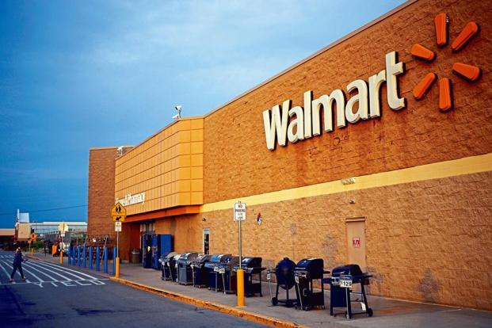

FarmerRoot of Food tracesbility system Traceability is a valuable business tool for farmers, due to the ability to trace a product through all stages of production and distribution.Farmer cooperatives play a huge role in US economy and are the enabler of the agricultural industry whose role is to protect farmer interests in acquiring inputs at lower prices, providing agronomy advice to farmers and helping farmers to market their products and sell them at better prices. All in all, the key role of farmer co-ops is to help farmers improve their farm profitability and ensure long-term sustainability. Activities: Add product, Requests, Response ,etc
|
|

RetailerMediator between Farmer and User Marketing Co-Ops do the crop marketing, buy commodities from farmers, package them and often deliver to end consumers under the joint brand. This is the base point when we speak about traceability and food origin when it comes to farmer co-ops. Let's see the customer journey and experience when buying and consuming the products. Activities: View Products, Requests, Response ,etc
|
UsersEnd Consumer-Last point of food traceability system Search about any product The moment of providing traceability information to a consumer is a very precious moment. At that point, we have all attention of a consumer-focused on this information and making a great impression by showcasing the real farmer story, what was the effort to grow those apples or pears, from which field do the apples come from, how do farming activities look like (photo gallery), which inputs were used for production and much more.
|